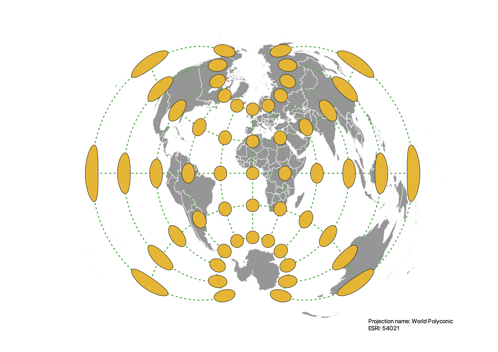

In this project I learned how to display images in different projections
Describe in your own words how you displayed the map in different projections using QGIS
In order to display the map in different projections using QGIS, I used the Project Coordinate Reference System (CRS) at the bottom right corner of the page.
From there I would search by projection name or EPSG/ESRI to apply the projection on my map. I also used the plugin called
Indicatrix mapper which uses constant radius ellipsoid caps. How the caps were displayed showed me the distortions in every map projection.
WGS84 Projection
Some observations

Aitoff Projection
Some observations

Psuedo Mercator Projection
In the Mercator projection, all of the indactrices are circles.
The indactrices distort as they get closer to the North and South pole.
Distortions in this projection are dependent on the latitude.
Sphere Winkel I Projection
Some observations

Equal Area Cyclindrical Projection
The Equal Area prjection preserves the area but the shapes are distored from
north to south and east to west.

World Equidistant Conic Projection
Some observations

North Pole Azimuthal Equidistant Projection
Some observations
World Robinson Projection
In the Robinson projection, both the area and shape are distorted all over the map

World Polyconic Projection
Some observations

Data used for this project
Download Natrual Earth 1:10m Cultural Vector